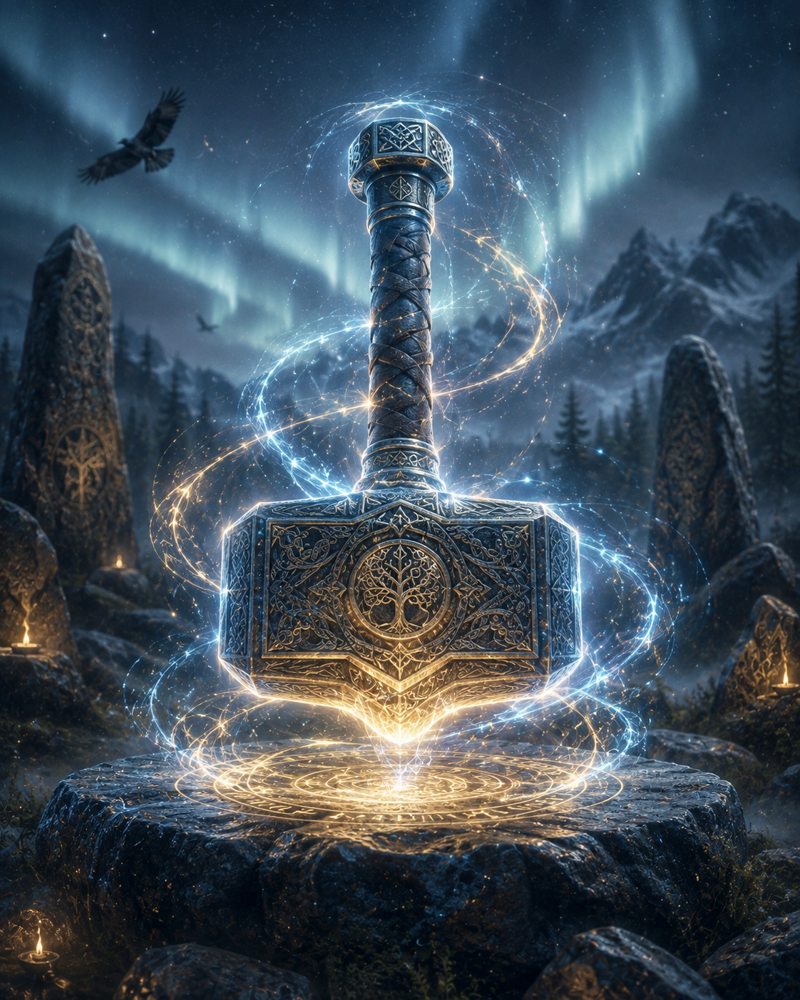

Soin énergétique de Thor
Le Soin Énergétique de Thor est un soin vibratoire puissant, axé sur la revitalisation, la protection absolue et la libération des blocages profonds.

Dans la mythologie nordique, Thor — dieu du tonnerre, de la force et protecteur des hommes — incarne le guerrier bienveillant qui défend le monde contre les forces du chaos. Dans cette pratique moderne, nous nous connectons à l'archétype et à l'énergie de Thor pour relancer la force vitale, dynamiser le corps et dissoudre les obstacles qui freinent votre progression.Un archétype de force, de purification et de protection
Bien que les récits scandinaves historiques ne décrivent pas la « thérapie énergétique » telle qu'on la pratique aujourd'hui, les anciens Nordiques possédaient une connaissance intime des forces de la nature et de la magie spirituelle : le Seiðr.
Si les sagesses anciennes n'ont pas laissé de protocoles de soins énergétiques écrits au sens moderne, les symboles nordiques comme le célèbre marteau de Thor (Mjöllnir) ont toujours été portés pour apporter protection, bénédiction et force au quotidien.
Ce soin réinterprète ces symboles de manière holistique : le tonnerre devient une onde d'éveil et d'éclatement des blocages, tandis que le marteau sert de catalyseur pour purifier l'aura et restructurer les énergies subtiles.
L'énergie sollicitée
L'énergie de Thor est dynamique, percutante, chaleureuse et profondément ancrée.
C'est une fréquence "foudre" qui vient réveiller les corps engourdis par la fatigue, dissoudre les résistances mentales et rétablir un sentiment de sécurité physique et émotionnelle. Elle est idéale pour les personnes qui se sentent épuisées, bloquées ou vulnérables aux influences extérieures.
En quoi le Soin de Thor peut vous aider ?
Grâce à sa puissance d'action, ce soin apporte des bienfaits très concrets
Force vitale, Vitalité & Ancrage
- Recharge énergétique : Stimule et relance le flux de votre énergie vitale (lutte contre la fatigue chronique et le surmenage).
- Détermination & Action: Redonne du courage, de la résilience et l'élan nécessaire pour passer à l'action et surmonter les épreuves.
Purification & Déblocage "Coup de Poing"
- Dissolution des blocages : Telle la foudre qui traverse les nuages, cette énergie vient « casser » les nœuds énergétiques, les croyances limitantes et les cristallisations dans le corps.
- Nettoyage de l'aura: Purifie en profondeur le champ aurique des toxines vibratoires et des lourdeurs accumulées.
Protection puissante contre le chaos
- Bouclier de protection : Erige une barrière vibratoire solide (symbolisée par le marteau Mjöllnir) pour repousser les énergies négatives, le vampirisme énergétique et les influences néfastes.
- Sentiment de sécurité: Rétablit un ancrage physique solide et apaise les peurs viscérales.
Comment se déroule une séance ?
Allongé(e) confortablement, vous recevez un soin vibratoire intense et enveloppant. Par l'imposition des mains et la canalisation des symboles et de l'énergie archétypale de Thor, je viens stimuler vos centres d'énergie, dissoudre les blocages tenaces et renforcer votre champ protecteur. Vous ressortez de la séance redynamisé(e), libéré(e) de vos lourdeurs et pleinement ancré(e) dans votre force.
Convaincu ? Curieux ? N'hésitez pas à...
Prendre contact
Ou encore à parcourir les autres soins